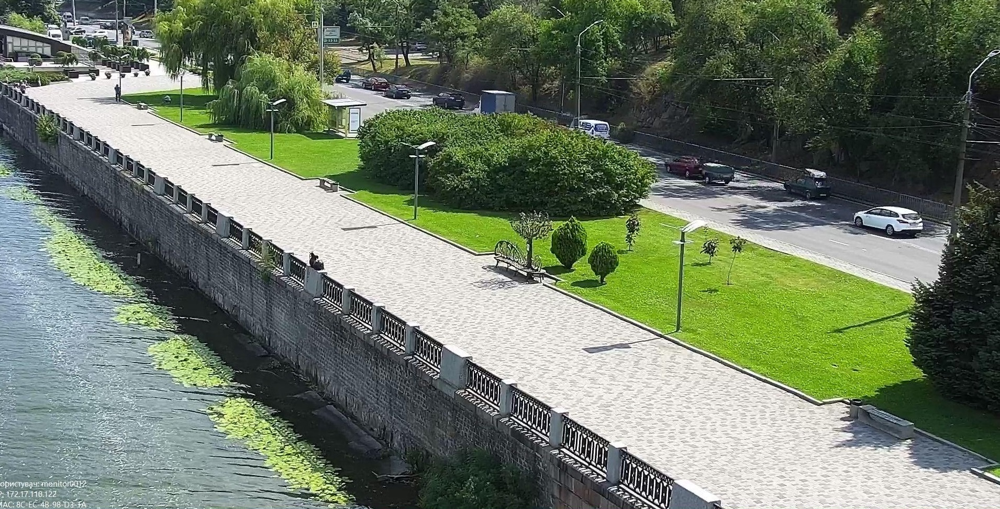

Безпечне місто
Згідно заходів Програми «Безпечне місто», починаючи з 2017 року у місті Дніпрі щорічно відбувалося поетапне створення загальноміської Системи ситуаційного відеоспостереження, співвиконавцем якої виступає КП «ІНФО-РАДА-ДНІПРО».
В рамках виконання заходів Програми з 2017 по 2023 рік були реалізовані п’ять етапів створення Системи ситуаційного відеоспостереження. Загалом в результаті їх реалізації на вулицях нашого міста було встановлено 2230 камер Системи та ще 400 камер були встановлені в рамках реалізації заходів інших програм та також підключені до Системи. Встановлені камери надають значну допомогу нашим правоохоронцям при розкритті правопорушень.
У 2022 році у результаті проведеної роботи були змонтовані 31 вузол відеоспостереження, в склад яких входять 92 камери відеоспостереження.
Загалом до системи «Безпечне місто» підключено близько 2630 камер відеоспостереження, у тому числі 208 камер з можливістю керування та 544 камери з можливістю отримання аналітичних даних.
За період з 2017 по 2023 рік створена власна оптоволоконна мережа: прокладено всього 490 км. повітряних оптичних мереж та 62 км. підземних магістральних оптичних мереж , у т.ч. у 2022 році прокладено 8,3 км. ліній оптичних мереж, та 3,5 км. підземних магістральних оптичних мереж.
Досить важливим здобутком у розбудові Системи відеоспостереження в рамках реалізації заходів Програми «Безпечне місто» було створення власного спеціалізованого Ситуаційного центру ДМР. Головны завдання ситуаційного центру: стежити за ситуацією в місті та практично миттєво комунікувати зі спец службами.
Система ситуаційного відеоспостереження на сьогодні значною мірою допомагає роботі працівників правоохоронних органів, Державної служби надзвичайних ситуацій, Національної гвардії України, , підрозділам Збройних Сил України, Сил територіальної оборони України та структурних підрозділів Дніпровської міської ради, яким для виконання своїх службових обов’язків потрібно постійно відстежувати оперативну ситуацію. Тому до Системи постійно приєднуються нові користувачі, наприклад, у 2022 році 154 нові користувачі отримали доступ до відеокамер Системи. Станом на 1 січня 2023 року в Системі ситуаційного відеоспостереження зареєстровано вже 384 постійних користувачів.
Важливим здобутком у розвитку Системи є те, що відтепер кожний мешканець міста може абсолютно безкоштовно скористатися записами із встановлених камер відеоспостереження (у разі ДТП, нещасних випадків, тощо).
Для цього мешканцю міста достатньо звернутися із заявою на отримання інформації з камер Системи через електронний сервіс «Кабінет мешканця м. Дніпра» на порталі ДМР або шляхом направлення звернення на електронну пошту:
inforadamonitoring@gmail.com,
або за тел. (067) 370 16 36; (056) 370 12 64.
Обробка звернень громадян відбувається в оперативному порядку,у терміни встановлені діючим законодавством Так за 2022 рік нашими працівниками були підготовлені відповіді на 901 запит городян, які були отримані за допомогою засобів електронної комунікації.
У 2022 році КП «ІНФО-РАДА-ДНІПРО» була розпочата робота по реалізації заходів міської цільової Програми «Безпечна школа» на 2018-2022 роки. В рамках реалізації заходів Програми були здійснені наступні закупівлі:
- Послуги з централізованого спостереження за системою охоронної сигналізації та реагування на засоби тривожної сигналізації за допомогою пульту централізованого спостереження з оперативним виїздом груп реагування та технічного обслуговування охоронної сигналізації – здійснювалось обслуговування 69 комунальних закладів освіти , у т.ч. 66 шкільних закладів та 3 дошкільних навчальних закладів;
- Послуги з технічного обслуговування систем протипожежного захисту з виведенням на пульт центрального спостереження – здійснювалось обслуговування 60 комунальних закладів освіти , у т.ч. 36 шкільних закладів та 24 дошкільних навчальних закладів;
- Обслуговування комп’ютерної та периферійної техніки здійснювалось обслуговування близько 6000 одиниць техніки в 159 шкільних закладах освіти;
- Придбання обладнання та створення структурованих кабельних мереж у сховищах 168 шкільних закладів освіти, а саме: придбання 168 бездротових точок доступу, 24 одиниць спеціалізованого комутаційного обладнання, прокладання 16,8 км. кабельних мереж;
- Придбання обладнання та створення структурованих кабельних мереж у сховищах 172 дошкільних навчальних закладів, а саме: придбання 447 бездротових точок доступу, 344 одиниць спеціалізованого комутаційного обладнання, прокладання 24,1 км. кабельних мереж.
Для подання запиту до Ситуаційного центру звертатися:
inforadamonitoring@gmail.com
inforadadnipro@gmail.com
тел. +380 67 370 16 36; +380 67 370 12 64
Для отримання відеозапису із системи ситуаційного відеоспостереження міста Дніпра (далі – Система) Вам необхідно заповнити форму за посиланням нижче (окремо для фізичних та юридичних осіб), із обов’язковим прикріпленням сканованої копії або фотографії Вашого паспорту, посвідчення водія або іншого посвідчення особи.
Хочемо зауважити, що з метою ідентифікації Вашої особистості та з ціллю запобігання зловживання наданою можливістю, запити які не мають прикріплених файлів (сканована копія або фотографія посвідчення особи) за якими можливо ідентифікувати особу запитувача, розглядатися не будуть.
Додатково нагадуємо про те, що Ситуаційний центр не наділений повноваженнями стосовно відстеження пересування автотранспорту за державними номерними знаками або іншими особливостями, розпізнаванням обличь, відслідковуванням переміщення осіб або виконання інших спеціалізованих аналітичних функції, які не притаманні діяльності органів місцевого самоврядування та відповідно до технічних вимог до створення Системи, розмір відеоархіву становить 30 діб запису цілодобово.
